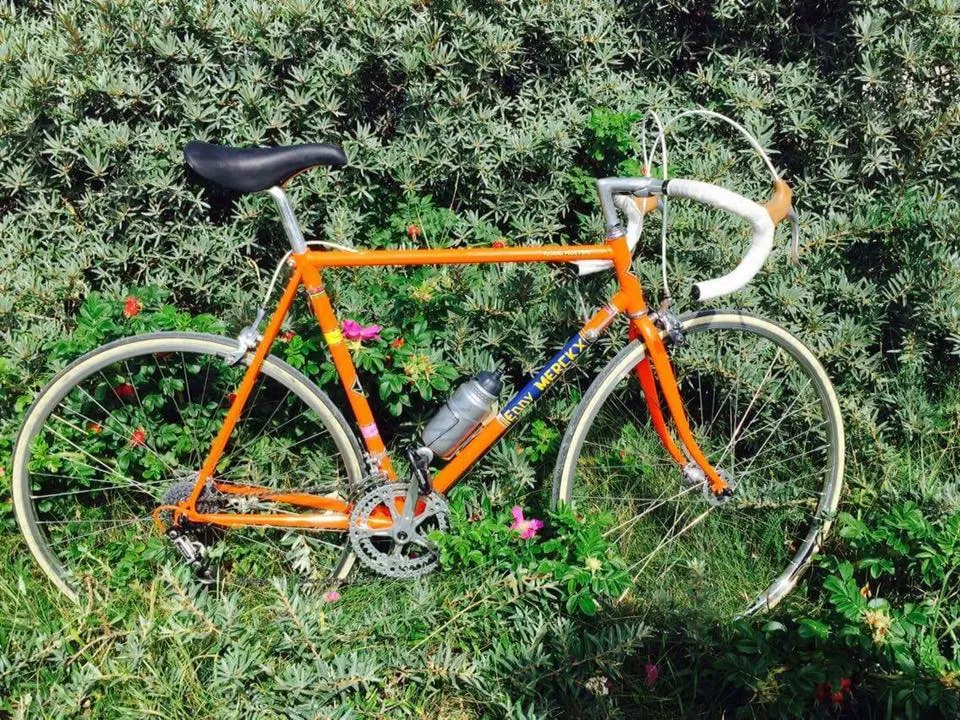

Løbsberetning: Arresø Rundt 2016

Man kan jo ikke sidde i sofaen og se kvindernes Beach Volley fra Rio hele tiden. Som Squadra Moltenis forholdsvis nye rytter – men vist alderspræsident – tog jeg derfor til vandkantsdanmark i morges, hvor badeferiebyen og fiskerlejet Liseleje var startsted for Arresø Rundt.
Vejrudsigten var lidt lumsk, men ikke værre end det blev kort/kort og så lidt varmecreme på benene.
Start og mål var 100 meter fra klitterne og stranden og kl 10.00 sendte borgmesteren hovedparten af de 160 ryttere afsted på 58 km ruten – der var rullende start mellem 10 og 11 og en del søndagsmotionister startede senere (plus en mere, det vender jeg tilbage til).
Fuld fart med shaved guns
Jeg tog leadet ud af Liseleje for lige at se, hvem der ville være med og ret hurtigt samledes en 12-14 mands gruppe i front. Som den eneste med shaved guns i gruppen følte jeg en forpligtigelse til at få fart på gruppen og tog en pæn sjat af føringerne de første 20 kilometer, og valgte også lige at teste, hvordan gruppen hang på når der kom lidt bakker.
Det så udmærket ud, gruppen blev decimeret til 10 mand og jeg sad fint med. Vi kørte øst om Arresø og nede i bunden kom der lidt sidevind.
Vi var kun 5-6 i gruppen som tog del i føringsarbejdet, de øvrige tog bare hjul og intet ansvar. Ikke mindst gruppens yngste, en gut i start-20’erne på en cykel der var beskidt og så fedtet ved kassetten at han jo egentlig ikke skulle have haft starttilladelse.
Kednte Squadra Molteni fra La Marmotte og Kongeetapen
Jeg behøver vel ikke nævne, at jeg var eneste i gruppen på stål, og et par stykker i gruppen kendte godt til Squadra Molteni. De havde mødt Squadra Molteni holdet der kørte La Marmotte, hvor de trak adskillige carboncykler op af tinderne i Frankrig.
En anden havde været med i den gruppe Squadra Molteni førte an med knap 40 i snit de første 100 km af Kongeetapen i Postdanmark Rundt for to uger siden.
Vi suste forbi depotet og mod bakken efter Kregme, som er en lang og moderat hård stigning. Jeg overvejede et kort sekund et angreb her, hvor der vel var godt 15 kilometer hjem, men trykkede i stedet kun farten lidt op sammen med en af de andre der tog føringsarbejde.
En taktisk finale
Som kilometrene til mål blev færre begyndte der lidt taktisk spil. To fra gruppen forsøgte med testangreb 6-7 km før mål, men der kom samling igen. Vinderen skulle findes i gruppen og der var stiltiende enighed, blandt de 6 der havde taget føringsarbejde, om at det var blandt os vinderen skulle findes.
Knægten der lå på hjul med uvasket cykel skulle det i al fald ikke være. Det løste sig selv da han fik noget i hjulet, og kort måtte stoppe op. En makker til ham – som heller ikke havde deltaget i føringsarbejdet – gjorde det samme, og de kunne ikke lukke hullet op til os.
Så var vi 7-8 i finalen. Et lille loop kort før mål, betød at ingen ikke helt var klar over om der var 1, 2, eller 3 kilometer til stregen og nervøsiteten ved at stikke for tidligt var tydelig. Men så blev der lukket op. To mand fik et hul, og vi blæste ind mod Liseleje. Jeg havde for lidt krudt til at komme op, og få kontakt og endte med en 7. plads 12 sekunder efter 1’eren fra gruppen – som kan jeg se her på resultatlisten – ikke vandt.
Fedt løb
Vores gruppe kom rundt i 1.43 – 33,9 i snit, men en meget sen starter – vel en triatlet med! – i den rullende start havde kørt rundt i 1.21. Nå, men det var er fedt løb, kanon at sidde med i front som eneste stålracer, og den kuperede rute var god og det holdt tørvejr – ja, solen kom endda frem til sidst.
Havde der været et par Molteni folk mere er jeg sikker på at vi kunne have kørt Grane Maaløe op til 1. pladsen i finalen. Og når mål er lige uden for bølgen blå blev der naturligvis afsluttet med et havbad.
